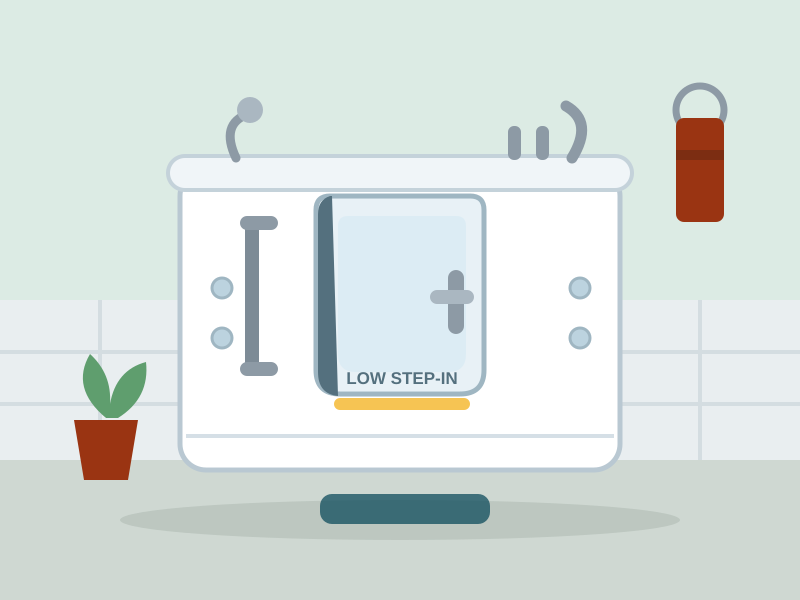

AmeriGlide Sanctuary Walk-In Tub — available from AmeriGlide. Illustration by HomeEnabled, based on the manufacturer's current model.
There is a moment in many of my home assessments when I ask a client to show me how they get into their bathtub, and the room goes quiet. Swinging a leg over a 15-inch tub wall on a wet floor is, biomechanically, one of the hardest things we ask an older body to do — a single-leg balance on slick porcelain, twice per bath. The walk-in tub exists to delete that moment entirely.
The AmeriGlide Sanctuary is the walk-in tub we recommend first. You open the inward-swinging door, step over a threshold of just a few inches, sit on a built-in chair-height seat, close the watertight door and fill the tub around you. Chest-deep water from a seated position — something a conventional tub can't offer at any age — plus optional air and water jets that do real therapeutic work on arthritic knees, hips and backs.
The HomeEnabled Verdict: The Sanctuary turns the most dangerous room in the house into the most restorative one. If the budget allows one major aging-in-place renovation, this is the one we'd make.
Why It Made Our List
Among the walk-in tubs we evaluated, the Sanctuary hit the best balance of safety engineering, build quality and price. The inward-swinging door uses water pressure to seal itself tighter as the tub fills — a self-reinforcing design — while the textured floor, built-in grab bar and ADA-height seat address every fall risk a bathroom assessment flags.
It also fits where your current tub sits. The Sanctuary line includes compact sizes designed to slot into a standard tub alcove, which keeps renovation scope (and cost) under control.
Key Features
- Ultra-low step-in threshold — entry height of just a few inches replaces the 15-inch leg swing of a conventional tub.
- Watertight inward-swinging door — water pressure seals the door tighter as the tub fills.
- ADA-compliant built-in seat — 17-inch chair-height seating means no lowering to floor level, ever.
- Optional hydrotherapy — air and whirlpool jet packages target arthritic joints and poor circulation.
- Textured slip-resistant floor — secure footing for entry, exit and standing rinses.
- Fast-drain technology — shortens the seated wait while the tub empties before opening the door.
Specifications at a Glance
| Door style | Inward-swinging, watertight |
|---|---|
| Step-in height | Ultra-low threshold (a few inches) |
| Seat | Built-in, ≈17-inch ADA chair height |
| Therapy options | Air jets, whirlpool jets, dual systems |
| Fixtures | Deck-mounted faucet set with hand shower |
| Safety | Built-in grab bar, textured floor, scald-protection valve |
| Fit | Compact sizes fit standard tub alcoves |
| Installation | Professional installation required (plumber/contractor) |
Pros & Cons
What We Love
- Eliminates the single most dangerous movement in the home bathroom
- Chest-deep seated soaking a regular tub can't provide
- Hydrotherapy options deliver real relief for arthritis
- Self-sealing door design grows tighter as water rises
- Compact models fit existing tub alcoves
Worth Considering
- Requires professional installation and a real renovation budget
- You enter and exit while the tub is empty — fill and drain happen around you
- Heavier water usage than a shower
Who It's For
The Sanctuary is for households committed to staying put for years — it's a renovation, not an accessory, and it pays its dividends over the long run. It's especially right for bath lovers with arthritis, chronic pain or balance problems, and for couples where one partner needs safety features and both will enjoy the hydrotherapy.
If you need a safer bath this month rather than after a renovation, start with the reclining bath lift above; many families use one while planning a walk-in tub for the year ahead.
Price & Where to Buy
Quality walk-in tubs run $4,000–$10,000 before installation, and the Sanctuary sits at the value end of that range without skimping on the door, seat or jets. Compared with the heavily advertised national brands — whose in-home sales quotes frequently exceed $15,000 installed — buying direct saves thousands for the same category of product.
AmeriGlide Sanctuary Walk-In Tub
🔄 Price tracked automatically · last verified June 17, 2026. Sale pricing and availability may change at any time.
Frequently Asked Questions
Do you have to sit in the tub while it fills and drains?
Yes — that's inherent to all walk-in tubs, since the door must stay closed while there's water inside. The Sanctuary's fast-drain option meaningfully shortens the wait.
Will it fit where my current bathtub is?
Compact Sanctuary models are sized for standard tub alcoves. Your installer will confirm dimensions, door clearance and drain position during the site check.
Is a walk-in tub covered by Medicare?
Generally not — Medicare classifies walk-in tubs as a convenience item in most cases. Some Medicare Advantage plans, veterans' programs and state waivers do offer partial support; check before you buy.
The Bottom Line
The Sanctuary turns the most dangerous room in the house into the most restorative one. If the budget allows one major aging-in-place renovation, this is the one we'd make. As always: measure twice, talk with the rider, and when in doubt, ask an occupational therapist to look at your specific home. If you have questions this review didn't answer, write to us — we read everything.